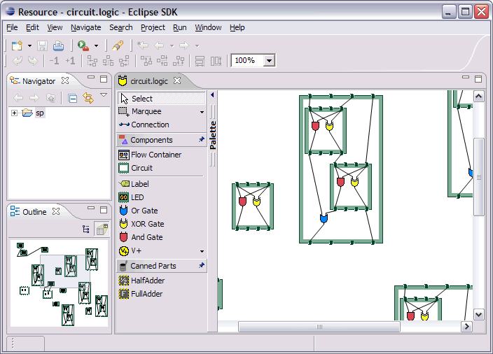
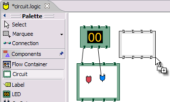

When to Use - How can GEF and the Eclipse Platform be used
Editing and Edit Policies - Adding editing support to your Graphical View
Editpart Lifecycle - Interesting events to know about
Interactions - the GEF interactions and the players involved
Draw2d focuses on efficient painting and layout of figures. The GEF plug-in adds editing on top of Draw2d. The purpose of this framework is to:
Facilitate the display of any model graphically using draw2d figures
Support interactions from mouse, keyboard, or the Workbench
Provide common components related to the above
The diagram below shows a high-level view of GEF. GEF can be loosely defined as the region in the middle. The framework provides the link between an application's model and view. It also provides input handlers, such as tools and actions, that turn events into requests. Requests and Commands are used to encapsulate interactions and their effects on the model.
In MVC (model-view-controller) design, the controller is often the only connection between the view and the model. The controller is responsible for maintaining the view, and for interpreting UI events and turning them into operations on the model. These roles as they apply to GEF are described below:
Model
The model is any data that gets persisted. Any model can be used with GEF. The model must have some sort of notification mechanism. Although not technically the model, commands are closely related. A command is how the model is modified in a way that can be undone and redone by the user. In general, commands should work only on the model itself.
View (Figures/Treeitems)
The view is anything visible to the user. Both Figures and TreeItems can be used as view elements.
Controller (EditPart)
There is usually one controller per visualized model object. The controller is called an
EditPart. Editparts are the link between the model and the view. They are also responsible for editing. Editparts contain helpers called EditPolicies, which handle the much of the editing task.
Viewers
An
EditPartVieweris where editparts display their view. There are two types of viewers provided in GEF. A graphical viewer hosts figures while a tree viewer displays native treeitems. GEF viewers are similar to JFace viewers in that they manage an SWT Control. Viewers are also a selection provider, and the unit of selection is the EditPart
GEF can be used anywhere that you can use an SWT Control inside a Workbench. It could be an editor, a view, a wizard page, etc. Most commonly it is used inside an EditorPart and sometimes in that editor's outline page.
GEF requires the Eclipse Rich Client Platform (RCP) and the "views" plug-in (org.eclipse.ui.views),
which provides property sheet support.
Editparts associate their view and model, but they also form their own structure. An editpart maintains children. Usually this corresponds to a similar containment found in the model. For example, the model may consist of a diagram containing nodes. There would then be a corresponding diagram editpart which contains multiple node editpart children.
The parent-child relationship of editparts carries over into their figures. The parent's figure will contain the children's figures. Or, in some cases the parent part's view is a compound view composed of several figures, one of which is designated as the content pane. The figure of each child is added to the content pane. The end result is that you have three separate hierarchical data structures which are approximately parallel to each other.

Connections are the exception to this simple tree structure. Connections represent a link or association between two objects. A Draw2d connection figure is used as the view. Connections man be stored in any way in the model, but the editparts are managed by the source and target editpart at each end. A connection editpart's figure containment is also handled specially. The connection figure is added to a special layer in the diagram so that it paints above the primary layer containing non-connection parts.
There are two types of editpart implementations provided with GEF. Graphical editparts use figures as their view. Graphical editparts also add the ability to support connections, which themselves are graphical editparts. The other type is a tree editpart. Tree editparts use SWT treeitems as their view.
The responsibilities of each editpart include:
Note that maintaining the view and other editparts implies that the editpart will be notified of changes in the model. Usually, the editpart hooks a listener directly to the model object(s) with which it is associated. When it receives notification, it updates its view or structure depending on the change.
As the name implies, editparts must support editing the model. But first we will focus on the initial steps of building an application, which is to display the initial model.
Once you have a model and some figures with which to view it, the next step is to put the pieces together. This means creating the editparts that are going to work with each model and figure combination. GEF's implementations are abstract and must be extended for your application. But first, we need to set up the foundation.
GEF includes the class ScrollingGraphicalViewer. This is a viewer
implementation which uses a Draw2d FigureCanvas. Most applications
use this viewer unless, for some reason, scrollbars are not needed. The next step
is to decide which root editpart to use. Each editpart viewer requires a
special editpart called the root. This editpart does not correspond to anything
in the model. Its function is to setup the viewer and provide a uniform context
for all of the application's "real" editparts. There are two implementations to
consider using:
ScalableRootEditPart - provides the standard set of layers and
supports zoom should the application decide to expose this to the user.
ScalableFreeformRootEditPart - similar to above, but all of the
layers conform to the freeform interface, which allows the diagram to
additionally extend into negative coordinates (to the left and up). This is
the most flexible and commonly used root editpart.
Now we have a viewer and its root editpart, so next we'll actually
set some contents into the viewer. Contents refers to the base model
object that seeds the viewer with the graphical diagram being displayed. The
viewer's EditPartFactory is then responsible for taking the
contents and
constructing the appropriate editpart, which is then set on the root editpart.
Its figure gets added to the root's. At that point the contents editpart will
construct its children editparts, reusing the viewer's factory, which in turn
then create their children and/or connections, etc., until all of the editparts
and their views have been created.

So the first implementation you will need to write is the
contents editpart. You'll also need to implement a factory which recognizes the
contents model object and constructs this editpart. This part's figure provides the
backdrop for the rest of the diagram. Usually it doesn't even need to paint, but
you still need to choose the layout manager and the figure type based on the
root editpart. To control which figure gets created, override createFigure(). When using a freeform root, the contents figure must implement
the freeform API. The FreeformLayer figure will suffice. The layout
manager is often the XYLayout or the FreeformLayout, again depending on whether
the root is freeform or not.
During initialization, the contents editpart will construct its
children based on the list returned when calling getModelChildren()
on itself. Editparts should override this method to return the list of objects
in the model for which child editparts should be created. By default, editparts
go back to the viewer's factory to create each child.
The children of the diagram, sometimes called nodes, usually
display some information to the user. Their figures may be one of the default
provided figures, a custom figure, or a composition of multiple figures. During
the population of the viewer, each editpart will have its refreshVisuals()
method called. This method is responsible for reflecting the model's properties
in the view. Editparts must override this method based on the model and figure
they work with. In complex cases this method can be factored out into several
smaller helper methods. Later, when we start listening to model changes, this
method or its helpers may be invoked again.
If a child of the diagram is also a parent with its own children,
it needs to override getModelChildren() in the same manner that the
diagram editpart did.
Connections are special editparts that connect any two editparts in
a diagram. An editpart is called a node if it can be the source or target of a
connection. The connections are created and managed in a shared way by both of
its source and
target nodes. Each node in the diagram must override getModelSourceConnections() and getModelTargetConnections() to
return the model object representing the connection. GEF then checks to see if
the connection editpart has already been created (by the other node at the other
end), and if not
it asks the factory to create the connection editpart. The source node is
responsible for activating and adding the connection figure to the diagram.
A connection editpart's figure must be a Draw2d Connection. The connection editpart attempts to set its figure's anchors by
casting the source and target nodes to a NodeEditPart. The source
and target must return the appropriate anchors or default anchors with bogus
fixed locations will be used instead.
In many ways connections are just like other editparts. They typically have properties in their model that must be visualized. They may even themselves have children or be nodes to other connections.
So far we have focused on just displaying a model graphically. This
requires that you extend AbstractGraphicalEditPart and override
behavior based on each part's model. Here is a summary of the methods discussed:
createFigure() - this method creates the editpart's view, or
figure. This method does not reflect the model's state in the figure.
That is done in refreshVisuals()
refreshVisuals() - this method reflects model attributes in the
view. Complex editparts may further decompose this method into several
helper methods.
getModelChildren() - this method is called to determine if
there are model elements for which children editparts should be created.
getModelSource/TargetConnections() - similar to children,
but model elements returned here indicate connections for which the editpart
is the source or target.
Once you have some editparts displayed it's time to start editing. Editing is usually the most complex task an editpart performs. Editing includes not only making changes to the model, but also showing graphical feedback during interactions with the view. To abstract away the source of interaction, GEF uses a request. Tools or other UI interpreters will create requests and then call the various API on EditPart based on the interaction. A subset of the EditPart API is shown below.
 |
Methods on EditPart which take a Request:
|
| 1 |
The first step of editing is to decide which editparts
are involved. Usually, it is some combination of the viewer's current selection and an
editpart calculated based on the current mouse location. The selection can be
trimmed by asking if each selected part understands a request. The part under
the mouse, called the target, is found with the viewer's help and the
|
| 2 |
During interactions, especially mouse interactions and
dragging, editparts are asked to show feedback based on their role in
the interaction. An editpart is considered the source if it is
the part being acted on. A target editpart is the part underneath
the mouse. For example, when dragging a node around a diagram, the node
is the source, and the diagram is the target. The node is asked to show
source feedback, which might be a rectangle or some other modified
representation of the node. The diagram is asked to show target
feedback. When reattaching the end of a connection, a node might be
showing target feedback instead. Some interactions only operate on a
source. |
| 3 |
The command is what eventually changes the model.
Editparts are asked for a command for a given request. Commands also
help determine if the interaction is possible. If there is no command,
or it is not executable, the UI will indicate that the interaction is
not allowed. If an editpart contributes NULL as its command, it does not
prevent the interaction from occurring, unless of course no commands are
provided by any of the editparts. To indicate something is not
allowed, the editpart must return a command that is not executable. |
| 4 |
Finally, there is a generic API telling an editpart to just "do something". This is generally something that does not immediately result in a model change. For example, opening a dialog or activating the "direct-edit" mode. |
 Editparts
don't handle editing directly. Instead, they use EditPolicies. Each editpolicy
is then able to focus on a single editing task or group of related tasks. This also allows editing
behavior to be selectively reused across different editpart implementations. Also, behavior
can change dynamically, such as when the layouts or routing methods change.
Editparts
don't handle editing directly. Instead, they use EditPolicies. Each editpolicy
is then able to focus on a single editing task or group of related tasks. This also allows editing
behavior to be selectively reused across different editpart implementations. Also, behavior
can change dynamically, such as when the layouts or routing methods change.
When any of the above editing
methods are called (except performRequest()), the editpart delegates to its
policies to satisfy the request. Depending on the method, the editpart may stop
at the first policy that handles a request, or it may allow each policy a chance to
contribute. Refer to each method's javadoc for more details.
During the editpart's creation, createEditPolicies() is called and the editpart
should install the appropriate policies.
EditPolicies are installed using roles, which are nothing more than
identifiers that serve as keys. GEF
provides several identifiers for commonly used roles. Roles become important
when an editpart needs to have its policies removed or swapped out. The rest of
the time it is just a good habit. GEF also provides several policies
for use with these roles. Many of these policies must be extended to fill in the missing
pieces that work with the application's model. EditPolicies are
discussed in more detail in the section on interactions.
Commands are passed around throughout editing. They are used to encapsulate and combine changes to the application's model.
An application has a single command stack. Commands must be executed using the command stack rather than directly calling execute.
With respect to lifecycle, editpart implementations typically only have to worry about extending activation and deactivation, which is when the editpart should add and remove its model listeners. Still, an understanding of the entire lifecycle is important.
The first thing that happens is creation. Most editparts will be created by the viewer's factory, which is invoked by either the viewer or the managing editpart which is typically the parent. Immediately after being created, the following methods are called:
setModel() - if the constructor does not take the model as an
argument, it should be set immediately. Other events that followed may be based
on the part's model
setParent(...) - the very first step is to tell the part its parent.
This gives the part a path back to its viewer, which it might need for things
like accessing the editpart registry.
createFigure() - Although this is a protected method, the timing of when it
gets is somewhat interesting. Both the parent and the model are known at the time the figure needs to be
created.
addNotify() - Signals the completion of the child being added to the parent.
At this point, the child will do the following:
activate() - Indicates that the editpart should become active for
editing, meaning that the model might change. The parent only activates its
child if it is also active. The root is only active if the viewer has created
its Control. An editpart should do the
following on activation:
Start listening to the model. Subclasses should extend this method to add any necessary listeners.
Activate all of the editpolicies.
Activate all children and outgoing connection editparts.
At this point the editpart is in its normal editing state. It gets selected, shows feedback, and returns commands, etc., until it is no longer needed, meaning it is either removed from the diagram or the viewer is being disposed.
deactivate() - the opposite of activate. Once again, subclasses
should extend this method to remove the listeners added during activation.
 The remaining steps only occur when the editpart gets
removed, meaning its model was removed from the diagram. If the viewer is being disposed, then deactivation is the only thing
that is guaranteed to occur. For this reason, activate and deactivate are the
commonly extended methods while the remaining methods can usually be ignored.
The remaining steps only occur when the editpart gets
removed, meaning its model was removed from the diagram. If the viewer is being disposed, then deactivation is the only thing
that is guaranteed to occur. For this reason, activate and deactivate are the
commonly extended methods while the remaining methods can usually be ignored.
removeNotify() - Signals that the editpart is about to incur removal. The
following must happen while the editpart still has access to its surroundings:
Remove self as source or target of any connections. Connections don't go away unless both source and target get set to null.
setParent(null) - The last step of removal. The parent and
viewer are no longer reachable at this point.
Editparts do not come
back from the grave. When a change in the model is undone, a new editpart
is created. For this reason, commands should not reference editparts, and
editparts should not contain any important state that must be restored on undo.
A tool handles most events from a viewer. The
EditDomain keeps track of the currently active tool. Applications
may use the palette (PaletteViewer) to display multiple tools, allowing the user
to change between modes such as selection, creation, etc.
Tools are implemented like state machines. SWT events provide the input to the state machine. Based on the event and current state, a tool will perform certain actions. These actions could include:
asking editparts to show or hide feedback
obtaining commands from editparts
executing a command on the command stack
updating the mouse cursor
A tool is activated by setting it on the EditDomain. There is only one active tool for all viewers in the domain. If a palette is being used, selecting a tool in the palette will activate that tool.
The Selection Tool is the primary tool used in GEF and is often the default
for an application. The selection tool is unique in its ability to delegate. Tt obtains a helper
called a DragTracker from an editpart or handle below the mouse when a drag
occurs. A drag is defined as a mouse button being pressed, its being released,
and any events that occur in between. Events are forwarded to the delegate so that the drag can be handled
differently based on where and how the drag originated. For example, clicking on a
handle may result in resizing a shape, or moving the end of a connection.
Clicking on an editpart typically drags that part to a new location or parent.

Ironically, the Selection Tool doesn't select editparts. All mouse clicks are handled as drags. When the Selection Tool receives a mouse down event over a selectable editpart, it asks for a drag tracker. The editpart returns a tracker derived from SelectEditPartTracker. The tracker also receives the mouse down event, as well as any other events, until the mouse button is released. When the tracker interprets a selection gesture, it modifies the viewer's selection. Trackers even handle events like double-click.
For more on the selection tool and trackers, see the section on Selection Interaction.
GEF's PaletteViewer provides an SWT Control allowing the user to select
which Tool is active. It can also be a drag source for dragging object from the
palette directly into the diagram. Use of the palette is optional, but common.
The palette can be placed anywhere, including inside the editor.
GEF provides a Workbench View for hosting the Palette. Also, a custom Composite,
the FlyoutPaletteComposite, will manage the placement of the
PaletteViewer beside a primary Control. This composite is
used as the editor's primary control in the Logic Example, shown below:

The PaletteViewer displays a Palette model, which starts with the
PaletteRoot. The root organizes the contents using either drawers,
which open and close, or groups, which do not. Each grouping element then
contains Palette Entries. An Entry defines either a tool or template for the
User. Templates are described below in Creation.
The Palette provides several display modes, such as icon-only. You can also provide a customizer to allow the user to modify or create palette content.
This section discusses the various types of interactions that are included in the framework, and which parts of the framework are involved in supporting the interaction. An interaction can be anything that affects the model or the UI state. Many interactions are graphical but some are not. An interaction may include:
Clicking and dragging something
Dropping something dragged from another source (native Drag-N-Drop)
This section discusses the participants involved in each interaction and what they do. This can include:
RequestConstants class.Any EditPolicy implementations provided in GEF for use with the interaction.
| Tools | Requests | Edit Policies and Roles | Actions |
| SelectionTool MarqueeTool SelectEditPartTracker *GraphicalViewerKeyHandler |
SelectionRequest DirectEditRequest REQ_SELECTION_HOVER REQ_OPEN REQ_DIRECT_EDIT |
SelectionEditPolicy DirectEditPolicy SELECTION_FEEDBACK_ROLE |
SelectAllAction |
No interaction is more basic or universal than selecting items in a viewer. Most of the interactions discussed here operate on what is currently selected. Yet, selection is a complex topic and there are several steps involved. The Selection Tool was briefly discussed in the above section on tools.
Let's first define selection. Selection is a List of EditParts maintained by an EditPartViewer. Changes to the selection are made by invoking methods on the viewer, and not by modifying the list directly. The selection is never empty. If the selection is cleared, the viewer's contents editpart becomes the selection. The last editpart in the list is considered the primary selection.
Closely related to selection is focus. Focus is a single editpart maintained by the EditPartViewer. Focus is used when manipulating selection via keyboard. By moving focus, the user can navigate from one editpart to another without changing the current selection. The user can add/remove the focused editpart from the selection. If focus is not explicitly set, it is the same as the primary selected part.
 Selection Handles |
The editpart is responsible for showing its selected and focused
state to the user. The viewer tells editparts when they are selected, focused,
or have primary selection. Typically, selection is shown by one or more
EditPolicies adding selection handles. The handles shown here on the LED and
circuit parts were added by
ResizableEditPolicy. The black handles indicate primary selection.Because selection handles are related to how a part can be dragged or sized, which in turn is related to the containing figure's layout manager, it is usually the parent part's editpolicy that installs a policy on the children for displaying the appropriate handles. For example, an XYLayoutEditPolicy would install a ResizableEditPolicy on each child of its host editpart. Connections may |
Selection Targeting and Feedback
For selection to occur, the Selection Tool must first target an
editpart using a SelectionRequest. In rare cases, an editpart is
not selectable and targeting "falls through", hitting the editpart below. During
this continuous mouse targeting, the Selection Tool invokes showFeedback() on the
current target editpart by passing it a SelectionRequest of type REQ_SELECTION. It is recommended
that most applications ignore this request since showing and hiding feedback as
the mouse moves across a diagram can be very distracting to the user. For this
reason, there is an additional feedback request sent with the type
REQ_SELECTION_HOVER whenever the user pauses the mouse over an editpart. Often
an editpart will display a popup shell similar to a tooltip displaying
additional information about the part. The SELECTION_FEEDBACK_ROLE identifier
can be used when installing policies which show such feedback.
A benefit to using these feedback requests is that the Selection Tool is smart about asking parts to erase feedback. For example, if the user starts dragging, you would not want a popup message to stay around. Also, selection feedback will not occur when other tools are active.
Selection via a DragTracker
Once the user actually presses down on the mouse, the selection
target will be asked for a DragTracker. To allow selection, return
a SelectEditPartTracker or its subclass DragEditPartsTracker,
depending on whether dragging is permitted. These trackers will modify selection
at the appropriate time, taking into consideration the SHIFT and CTRL modifier
keys.
The contents editpart should never be selected by a tracker.
The reason being that it should never be part of a multiple selection.
Therefore, it should return either a DeselectAllTracker,
or the MarqueeDragTracker. Remember, the selection is never empty
so the contents part will be the selection when all other parts are not
selected.
Other Selection Requests
Editparts may be asked to perform two additional Requests that are related to selection. These requests are related to selection in that they are interactions associated with clicking the primary mouse button. The first is a double-click, which is called an open (REQ_OPEN). This interaction can be used for editparts that can be opened, expanded, or may display a dialog. The other interaction is called a direct edit (REQ_DIRECT_EDIT). An example of direct editing is when the user wishes to modify the text of a label. The user must first select the part, and then click on it again after it is selected. After a brief delay (used to rule out a double-click), the request is sent.
Selection Actions
GEF provides a SelectAllAction. Given a viewer, this action
selects all of the contents part's children when invoked.
Selection using the Keyboard
Keyboard selection is supported in graphical viewers by installing a
GraphicalViewerKeyHandler. The key handler only receives key events
sent to it by the current tool. The Selection Tool forwards key forwards the
events necessary for selection.
Drag trackers are not needed
inside GEF's TreeViewer. The native tree handles selection already, and dragging
of treeitems is processed internally using native DND.
| Tools | Requests | Edit Policies and Roles | Actions |
| REQ_DELETE | COMPONENT_ROLE CONNECTION_ROLE RootComponentEditPolicy |
DeleteAction |

The only universal interaction that all GEF applications should support is delete. The workbench places a global delete action on the edit menu. All applications should register a handler such as the included DeleteAction.
The DeleteAction sends a GroupRequest of type REQ_DELETE to the viewer's
current selection. All editparts should have an editpolicy which either supports
or prevents delete from occurring.
Every editpart is either a component or a connection. A component is a basic editpart that is the child of a parent. A connection is slightly different because it is owned by its source and target.
The COMPONENT_ROLE key is used when installing an editpolicy on
a component editpart. Applications can extend the
provided
ComponentEditPolicy to fill in the commands for deletion. The
RootComponentEditPolicy should be used on the contents editpart.
This policy prevents the diagram itself from being deleted. Here, "root" refers
to the model root and is not related to the viewer's root editpart.
The CONNECTION_ROLE key is used when installing a policy on a
connection editpart. Applications can extend the provided ConnectionEditPolicy
to fill in the command for deletion.
These editpolicies should handle the tasks most closely associated with the model. In the logic example, this role is responsible for the LED's increment and decrement behavior, which adds or subtracts one from the LED's value.
Implementing the command that
performs delete can be difficult, especially when connections are involved. The
command must consider whether the object being deleted has connections, or if
children of the object being deleted have connections, and delete the
connections as well. But, you don't want to delete the same connection twice in
cases where both source and target nodes are being deleted as part of multiple
selection. The logic example's delete command addresses all of these concerns.
| Tools | Requests | Edit Policies and Roles | Actions |
| CreationTool |
REQ_CREATE Create |
CONTAINER_ROLE LAYOUT_ROLE TREE_CONTAINER_ROLE ContainerEditPolicy LayoutEditPolicy |
CopyTemplateAction PasteTemplateAction |
| TemplateTransferDropTargetListener TemplateTransferDragSourceListener |
|||

A CreateRequest is used to ask an editpart to create a new child. The request
is identified by the ID REQ_CREATE. Creation can occur through three different
methods: clicking, dragging, or pasting. The request provides the location,
object, and object type being created. The object and its type are provided by a
CreationFactory. The request hides the factory and provides access
to the created object directly, caching it in case multiple editpolicies all
need access to the created object. In some cases, the request will contain a
size attribute.
Producing CreateRequests
The creation tool provides a "loaded cursor" mode which will attempt
to create an object at the mouse location when clicking. If the mouse is pressed
and dragged, the tool will track the size of the rectangle defined by the user.
The creation tool can be placed on the palette using a CreationToolEntry.
When the mouse is released, the tool will either repeat the process or switch
back to the default tool.
Creation can also be performed using native Drag-and-Drop. The drag
source can be anything, but it is typically the PaletteViewer. A palette entry
taking a template is added to the palette. The TemplateTransfer is used
to transfer the template, which is just an Object, from the drag source to the
drop target. A TemplateTransferDragSourceListener must be added to the
PaletteViewer. Similarly, the viewer must have a
TemplateTransferDropTargetListener. Since a template is model-specific, the
application must extend the drop target listener to convert the template into a
CreationFactory for the request.
A special palette entry called the CombinedTemplateCreationEntry
supports both the creation tool and drag-and-drop style of creation.
Consuming CreateRequests
The target editpart is responsible for showing feedback and returning the command for creation. GEF provides two types of policies for handling creation. One type of policy is specific for the view in which creation occurs, either graphical or tree-based. This edit policy corresponds to either the LAYOUT_ROLE or the TREE_CONTAINER_ROLE.
The other type of edit policy is specific to only the model, should applications wish to separate out the potion that is shared between graphical and non-graphical creation. In most cases, any kind of shared logic is in the command implementations, making this type of policy unnecessary.
A LayoutEditPolicy handles the
process of creation based on the container's layout manager. For example, if the
XYLayout is being used, then the resulting Command will need to associate an (x,
y, w ,h) constraint with the created child. Layouts that don't use constraints
would require that the index of the drop location be determined. GEF provides
abstract policies for the basic layout types.
The TreeContainerEditPolicy is used for supporting creation in a
tree-based viewer. The policy is responsible for determining the index of
creation and showing feedback.
The PasteTemplateAction can be used to create objects
without the mouse. This is important for accessibility. The CopyTemplateAction
is added to the Palette. When the user invokes this action, an internal
mechanism copies the transfer so that it can be pasted in a viewer. When paste
occurs, the PasteTemplateAction retrieves the template object, constructs a
CreateRequest, and sends it to the selected editpart. Mouse location is not
available in this interaction. Paste is only enabled when the selection is
exactly one editpart.
When a creation command is
redone, it must restore the original child that was created the first time it
was executed. If it creates a new object, then subsequent commands will fail on
redo when they try to modify the originally created child.
| Tools | Requests | Edit Policies and Roles | Actions | |||
| DragEditPartsTracker ResizeTracker |
ChangeBoundsRequest AlignmentRequest
|
LayoutEditPolicy ResizableEditPolicy ContainerEditPolicy |
AlignmentAction MatchSizeAction |
 move interaction |  resize interaction |
The DragEditPartsTracker extends basic selection behavior to allow
the selected parts to be dragged within their graphical viewer. Dragging the
selected parts can result in three potential interactions: move, reparent, and
clone. All three use the ChangeBoundsRequest, which extends GroupRequest to
include a size delta, move delta, and mouse location.
While dragging the selection, if the tracker targets the part's
original parent, the request is typed as REQ_MOVE. If the target changes, the
interaction becomes a reparent. For a reparent, a request of type REQ_ORPHAN
is sent to the old parent, while the new target is sent a request of type REQ_ADD. When the CTRL key is pressed (ALT on
the Mac), the operation is always a REQ_CLONE, which is only sent to the target
part.
All of these requests are related in that they require the target to process a rectangle and a mouse location. The LayoutEditPolicy is responsible for handling each of these request types. For layouts which use constraints, each part's original bounds is taken and modified by the size and move deltas to determine a new bounds, for which a corresponding constraint is found. For index-based layouts, the mouse location is used to establish the new index.
A ContainerEditPolicy can optionally be used to contribute
additional commands (not related to the layout) during ADD, ORPHAN, and CLONE
requests.
Resizing
Resizing falls under the same category as changing bounds. Note
that when resizing either the top or left sides, the location of the part is
also changed. Resizing only makes sense for layouts with constraints, such as
XYLayout. The ResizableEditPolicy adds up to eight resize handles
to its host. When the Selection Tool is clicked on one of these resize handles,
a ResizeTracker performs a resize on the selected parts
understanding "resize". SHIFT and
CTRL key modifiers can be used to constrain the resize operation.
The types of handles available on an editpart depend on the layout manager in which its figure is placed. For example, parts inside a table might have handles for adjusting insets, padding, column span, or other attributes. Some layouts don't need any handles, but four corner handles should be added just to indicate selection. Dragging these handles would be the same as dragging the part itself.
Because of the relationship between handles and layouts, it is
recommended that the PRIMARY_DRAG_ROLE editpolicy be installed by the parent's
LayoutEditPolicy, which defines abstract methods for this
purpose. If a container changes layout managers during editing, typically the
layout policy gets swapped with one for the new layout manager. The new
policy then replaces the stale PRIMARY_DRAG_ROLE policies on each child.
The MatchSizeAction matches the size of the selected
parts to that of the primary selected part's size. This action is implemented in
a way similar to manually resizing the individual parts, and it uses the same
request and type.
The AlignmentAction
uses an AlignmentRequest, which extends ChangeBoundsRequest. When using
a ChangeBoundsRequest, the part's current placement in the Control (in
absolute coordinates) is passed to the request, which then returns a modified
version. Using this pattern, alignment is able to adjust each part's rectangle by
different amounts. In most cases, alignment can be treated no differently than a
move. This action aligns all selected parts with one of the edges of the primary
selected part.
| Tools | Requests | Edit Policies and Roles | Actions |
| ConnectionCreationTool ConnectionDragCreationTool |
CreateConnectionRequest REQ_CONNECTION_START REQ_CONNECTION_END |
GraphicalNodeEditPolicy NODE_ROLE |

The ConnectionCreationTool is used to create a new connection between nodes. This interaction requires the user to activate the tool (typically
using the palette), and then click on two editparts supporting
connections. The creation can be aborted by pressing the ESC key. The
ConnectionDragCreationTool is similar, but the interaction is a single mouse
drag. This tool can be returned as the drag tracker from a handle or even an
editpart in some cases.
The process is separated into two parts. The first part is defining the
source
of the connection. The source is a node, but it may also include a specific
"port" on that node. The tool uses a CreateConnectionRequest
identified by REQ_CONNECTION_START to determine the target editpart and ask it
for a command. However, this is only the first half of creating the connection,
so the command is not complete yet. The tool will not attempt to execute this
command or even ask if it is executable. This command is only used to pass
information to the target editpart.
The second part is to define the target node for the connection. The tool uses the same request but retypes it as REQ_CONNECTION_END. The command returned by the source node is now stored on the request and passed during the second part of the interaction. The target is asked for the final command that performs the entire creation of the connection. Any command can be returned at this point, including the command provided on the request, updated with the target node information. At this point, enablement will be determined by asking the command if it can be executed. Creation ends by executing the command.
During the first and second steps, the editpart being targeted as the source or target node is asked to show target feedback. The editpart might visually highlight various attachment points or simply indicate that it is the target.
The source node editpart is also asked to show source feedback during creation.
The provided GraphicalNodeEditPolicy can be used to display creation feedback.
This policy will create a connection feedback figure, and set its anchors using
the NodeEditPart interface. This mix-in interface for
GraphicalEditPart is used both during creation feedback, and when the
connection's editpart is created, to provide anchor points.
The "source" and "target" nodes should not be confused with "source" and "target" feedback. For feedback, "source" simply means show the feedback for the connection, while "target" means highlight the mouse target.
| Tools | Requests | Edit Policies and Roles| Actions |
|
| ConnectionEndpointTracker | ReconnectRequest REQ_RECONNECT_SOURCE REQ_RECONNECT_TARGET |
ConnectionEndpointEditPolicy ENDPOINT_ROLE GraphicalNodeEditPolicy NODE_ROLE |

By dragging the endpoints of an existing connection, its source or target can be changed. This includes changing "ports" on the same node editpart. This interaction is called reconnecting.
A connection adds handles at its endpoints by installing a
ConnectionEndpointEditPolicy with the ENDPOINT_ROLE. Each of these handles returns a
tracker for reconnecting the corresponding end of the connection. This policy is
also responsible for showing the connections feedback during the interaction.
This policy does not return commands and therefore is not abstract. The
reconnect command comes from the new target node.
As the source or target endpoint is dragged, the tracker sends
source feedback requests to the connection, and target feedback requests to the
current target if there is one. The tracker uses a ReconnectRequest
typed as either a source or target reconnect.
The target node's GraphicalNodeEditPolicy is responsible for showing target
feedback and returning the actual command to perform the reconnect. As with
creation, the target editpart should implement the NodeEditPart
interface, which allows the ConnectionEndpointEditPolicy to snap the feedback to
the nodes anchor(s).
| Tools | Requests | Edit Policies and Roles | Actions |
| ConnectionBendpointTracker | BendpointRequest REQ_MOVE_BENDPOINT REQ_CREATE_BENDPOINT |
BendpointEditPolicy CONNECTION_BENDPOINTS_ROLE |
|
Each handle provides a |
|
|
 Certain connection routers
accept routing constraints (typically a list of
Certain connection routers
accept routing constraints (typically a list of
 This
picture shows a selected connection in the Logic Example with
a single Bendpoint. The
This
picture shows a selected connection in the Logic Example with
a single Bendpoint. The